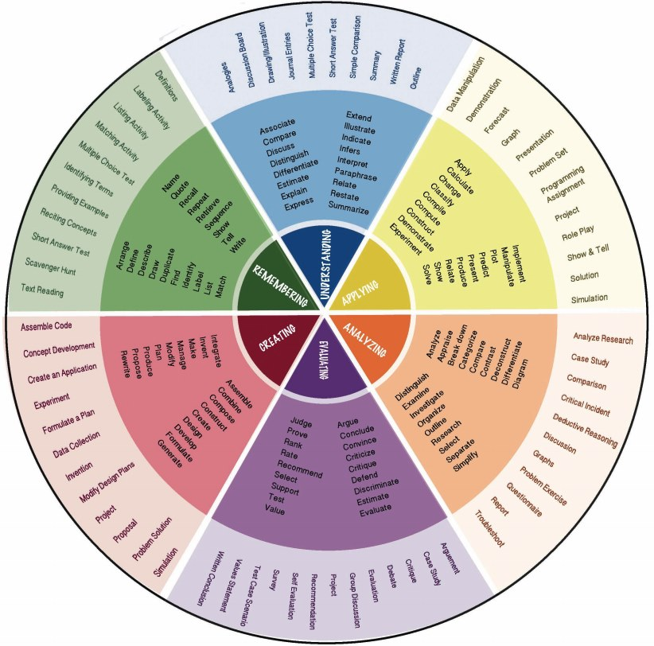

FCS Teaching Topics: A Simple Heuristic to Calibrate Your Level of Expectaition in Class
Bloom's Taxonomy Take-Aways
The Bloom's Taxonomy Pyramid - a quick reference to the levels.
Use the Bloom's Taxconomy Wheel to pick the best active verb to design your
questions and assessments.
What is Bloom's Taxonomy?
Bloom's Taxonomy helps educators - to create learning outcomes with
focussed terminology to reflect the difficulty of a task. It's extremely beneficial
for educators to be able to articulate the difficulty of tasks in their written
documentation and assessments. It encourages thinking about teaching and task
creation.
Bloom's Taxonomy helps students - to understand a clear direction for their
learning - which tasks require more thinking time and effort and the difficulty
level of specific tasks related to the course objectives.
Progression of Bloom's Taxonomy levels from lower level educational tasks growing in
complexity to those that require higher order critical thinking:
- remember
- understand
- apply
- analyse
- evaluate
- create
Where can I use this? In your course objectives, lesson objectives, teaching
strategies, learning activities and assessment tasks, and all educational
documentation to clearly indicate the level of cognitive application.
The visual representation of the taxonomy is usually in a pyramid
formation (although not exclusively). The hierarchical ordering of cognitive
skills starts with the easier cognitive tasks at the bottom and progresses in
difficulty with each section of the pyramid toward the top. To the right of each
stage of the pyramid is a brief explanation of the level with suggestions of
action terms to be used (Vanderbilt University, n.d.)

The Bloom's Taxonomy Colour Wheel - Terms and Activities
The colour wheel of Bloom's Taxonomy is especially helpful as it clearly
demonstrates what activities and action words fit into each one of the levels.
Keep in mind the order starts at Remembering (the easier tasks) and follows on
clockwise to Creating (the more challenging tasks) (John Hopkins, n.d.).
For a larger diagram click on the link: Bloom's Taxonomy Colour Wheel

Writing Learning Objectives (Johns Hopkins University)
Johns Hopkins Whiting School of Engineering is just one higher educational institution that
uses
Bloom's Taxonomy to assist instructors in writing strong and relevant learning objectives. For helpful
tips and examples, click on this link:
References
Johns Hopkins University. (n. d.). Writing Learning Objectives. Retrieved from
https://ep.jhu.edu/faculty/learning-roadmap-for-new-online-instructors/writing-learning-objectives
Vanderbilt University. (n.d.). Bloom's Taxonomy. Retrieved from
https://cft.vanderbilt.edu/guides-sub-pages/blooms-taxonomy/
Would you like to know more?
Drop by for a chat at The Academic Loop 239
Cell Number: 902-225-8453
Email: sbernier@dal.ca
I'm looking forward to working with you - Stephanie Bernier